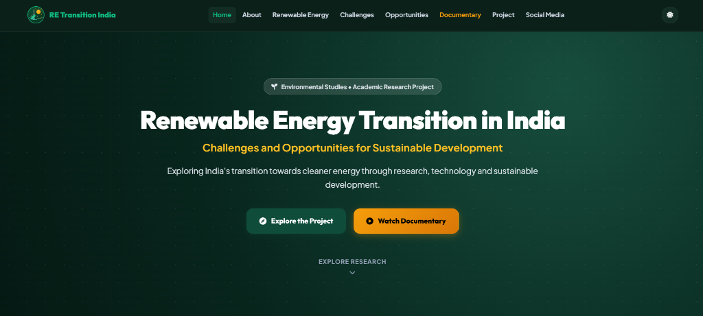
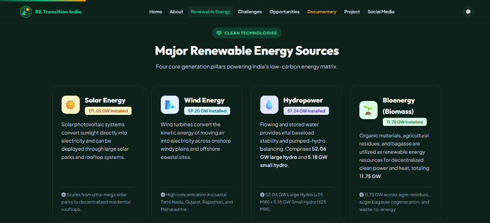
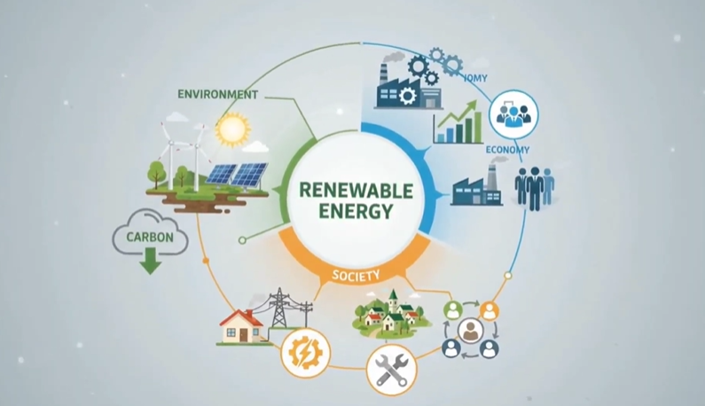
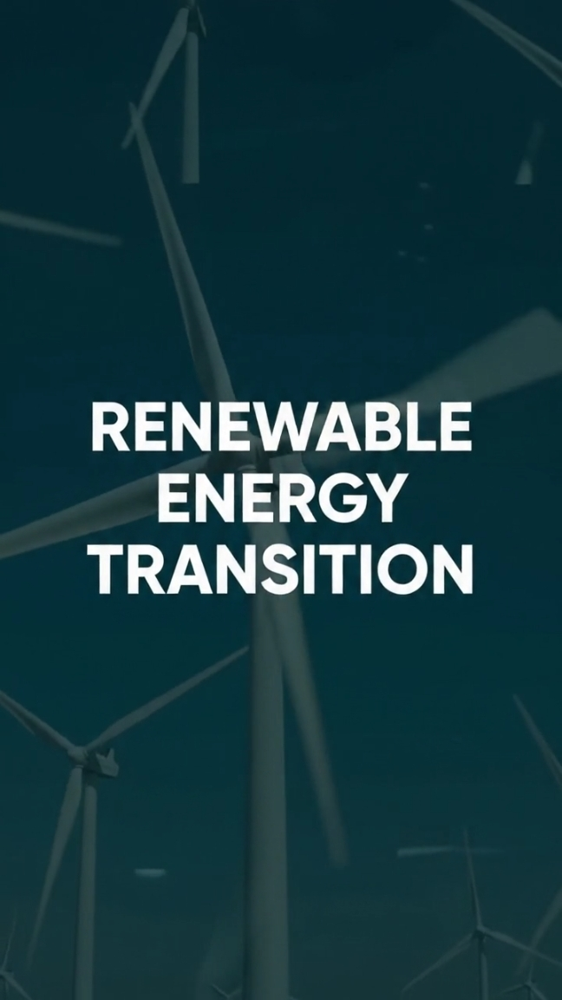

Renewable Energy Transition in India
Challenges and Opportunities for Sustainable Development
Exploring India's transition towards cleaner energy through research, technology and sustainable development.
Explore ResearchWhy Renewable Energy Matters
Energy is essential for India's economic growth and human development, but increasing dependence on fossil fuels creates critical environmental and energy-security challenges.
India is the world's third-largest energy consumer. While coal, petroleum, and natural gas have historically fueled industrialization, their combustion produces significant greenhouse gas emissions and urban air pollution. The renewable energy transition provides a cleaner alternative derived from naturally replenishing resources—curbing carbon emissions while ensuring long-term national energy sovereignty and sustainable development.
Solar Energy
Harnessing direct sunlight through photovoltaic cells and large-scale solar parks to generate clean electricity.
Wind Energy
Converting kinetic air motion into electric power utilizing onshore and offshore aerodynamic wind turbines.
Hydropower
Utilizing the kinetic energy of flowing or stored reservoir water to supply reliable baseload and grid flexibility.
Biomass
Converting organic agricultural residue, bagasse, and sustainable organic materials into bio-power and heat.
India's Renewable Energy at a Glance
Key figures documenting India's rapid clean energy expansion, sourced from MNRE and IEA.
Total installed renewable-energy capacity across India (as of 30 September 2026).
Installed solar photovoltaic capacity, leading national clean energy deployment.
Installed wind energy generation capacity across high-potential coastal and desert corridors.
Power-sector investment directed towards clean energy in 2024 (IEA).
Capacity vs. Generation Share
While non-fossil sources now account for over 54% of India's installed power capacity (up from 44% in 2024), their actual share in annual electricity generation remains ~22%–24% (CEA) due to resource intermittency and diurnal solar cycles.
Capacity Utilization Factor (CUF)
Solar CUF in India typically averages 18%–24% and wind 25%–35%, whereas baseload coal thermal runs at 65%–70% Plant Load Factor (PLF), underscoring the urgency of battery storage and pumped hydro.
Coal Baseload Dependence
Coal accounts for approximately 73% of gross power generation (CEA). A successful transition requires expanding firm, dispatchable renewables to retire legacy thermal plants without risking grid stability.
Major Renewable Energy Sources
Four core generation pillars powering India's low-carbon energy matrix.
Solar Energy
171.05 GW InstalledSolar photovoltaic systems convert sunlight directly into electricity and can be deployed through large solar parks and rooftop systems.
Wind Energy
59.20 GW InstalledWind turbines convert the kinetic energy of moving air into electricity across onshore windy plains and offshore coastal sites.
Hydropower
57.24 GW InstalledFlowing and stored water provides vital baseload stability and pumped-hydro balancing. Comprises 52.06 GW large hydro and 5.18 GW small hydro.
Bioenergy (Biomass)
11.75 GW InstalledOrganic materials, agricultural residues, and bagasse are utilized as renewable energy resources for decentralized clean power and heat, totaling 11.75 GW.
National Policy Framework & 2030–2070 Roadmap
Flagship government schemes, decarbonization mandates, and United Nations Sustainable Development Goals driving India's energy transition.
500 GW Non-Fossil Capacity by 2030
Pledged at COP26 Glasgow: achieve 500 GW of non-fossil electric capacity and fulfill 50% of cumulative electric power from renewables by 2030, reducing carbon emissions by 1 billion tonnes.
Net Zero GHG Emissions by 2070
India's Long-Term Low-Emission Development Strategy (LT-LEDS) submitted under the Paris Agreement, balancing economic growth and urbanization with national carbon neutrality by 2070.
PM Surya Ghar: Muft Bijli Yojana
Outlay of ₹75,021 crore launched in 2024 to solarize 1 crore (10 million) households, providing up to 300 units of free monthly electricity and decentralized residential grid feed-in.
PM-KUSUM Scheme
De-dieselization of Indian agriculture by installing standalone solar water pumps, solarizing existing agricultural feeders, and enabling farmers to sell surplus clean power to state discoms.
National Green Hydrogen Mission
₹19,744 crore mission targeting 5 MMT annual production of Green Hydrogen by 2030, backed by ~125 GW associated renewable capacity, decarbonizing steel, fertilizers, and heavy transport.
UN SDG 7 & SDG 13 Alignment
Directly drives SDG 7 (Affordable and Clean Energy) by enhancing rural electrification reliability and SDG 13 (Climate Action) by mitigating industrial emissions.
The Energy Transition
A structured visual progression from fossil dependence to a resilient, low-carbon energy ecosystem.
Conventional Energy
- Coal Power Generation
- Petroleum Fuel Reliance
- Natural Gas Combustion
Finite fuels, high greenhouse emissions, and urban pollution.
Clean Energy Transition
- Renewable Energy Expansion
- Battery & Pumped Storage
- Modern Grid Transmission
- Capital & Technology Investment
Modernizing power infrastructure and balancing intermittency.
Sustainable Energy System
- Cleaner Air & Decarbonization
- Long-Term Energy Security
- Sustainable Development & Jobs
Equitable, self-reliant, Net-Zero clean growth.
Challenges of India's Renewable Energy Transition
Click any card to inspect the structural challenges and technical considerations identified in the research.
Variable Generation
Solar and wind generation depend on sunlight and weather conditions, causing fluctuations in power output.
Energy Storage
Storage is required to balance renewable generation and electricity demand across day and night cycles.
Transmission Infrastructure
Renewable resources are not always located near areas with high electricity demand, requiring long-distance transmission.
Financing
High financing costs can affect renewable-energy projects due to upfront capital expenditures.
Land & Environment
Large projects require land and can create environmental and social considerations that require careful management.
Distribution Companies
The financial condition of electricity distribution companies (DISCOMs) can influence investment and timely power payments.
Opportunities for Sustainable Development
Accelerating clean energy strengthens economic growth, technological self-reliance, and public health.
Energy Security
Diversifying into domestic solar and wind reduces exposure to volatile international fossil fuel markets and geopolitical supply risks.
Reduced Fossil Dependence
Curtailing coal and crude oil consumption saves vital foreign exchange and curtails hazardous urban air pollution.
Clean Technology
Catalyzes research and industrial innovation in green hydrogen, advanced battery storage, smart grids, and electric mobility.
Employment Generation
Creates diverse green jobs in equipment manufacturing, installation engineering, maintenance, and distribution across urban and rural India.
Domestic Manufacturing
Incentivizes indigenous manufacturing of solar cells, modules, and wind turbines under national Make-in-India and PLI initiatives.
Environmental Protection
Substantially reduces carbon footprint and water usage compared to thermal power, mitigating climate vulnerability and preserving biodiversity.
“The renewable energy transition is not only an environmental necessity it is also an opportunity for India's economic and technological development.”
Watch the Documentary
An original research-based educational video documentary presenting the key findings, challenges, and opportunities of India's clean energy transition.

Read Educational Narrative Transcript & Chapter Overview Screen Reader & Text View
Chapter 1: Introduction & The National Energy Challenge
Energy is the lifeblood of economic development. As the world's third-largest energy consumer, India has historically powered its manufacturing, transportation, and urban expansion on fossil fuels—chiefly domestic coal and imported crude oil. However, this heavy reliance has led to escalating urban air pollution, mounting foreign exchange expenditure, and severe climate vulnerabilities. The central question facing the nation is: how can India sustain high GDP growth while decarbonizing its energy matrix? The answer lies in the largest clean energy transition in the developing world.
Chapter 2: Major Renewable Energy Sources & Deployment
The cornerstone of India's green transition is solar and wind energy. Blessed with over 300 sunny days annually and substantial solar irradiance, India has constructed ultra-mega solar parks such as Bhadla in Rajasthan and Pavagada in Karnataka. Solar photovoltaic capacity has surged past 170 GW, spanning utility-scale farms to residential rooftops. Simultaneously, onshore wind turbines across Tamil Nadu, Gujarat, and Maharashtra provide over 59 GW of complementary power, generating peak electricity during the monsoon season when solar radiation softens.
Chapter 3: Environmental & Socio-Economic Impact
The transition delivers profound ecological and economic dividends. Substituting thermal coal generation with clean power avoids hundreds of millions of tonnes of CO2 emissions annually, protecting fragile ecosystems and improving public health. Economically, the renewable energy sector has emerged as a premier employment creator—generating skilled livelihoods across panel fabrication, wind turbine blade manufacturing, civil construction, engineering, and rural distributed grid maintenance.
Chapter 4: Technical Challenges & The Intermittency Bottleneck
Rapid deployment introduces substantial systemic hurdles. The most acute challenge is renewable intermittency—solar produces power during daylight hours, while peak electricity demand peaks in the evening between 7 PM and 10 PM. Without massive grid-scale energy storage, surplus midday clean power risks curtailment. Furthermore, transmission congestion requires extensive Green Energy Corridors to wheel power from desert and coastal generation pockets to distant industrial load centers, alongside complex land acquisition and local ecological balances.
Chapter 5: Sustainable Future, Storage & Technological Innovation
To overcome these barriers, India is pioneering round-the-clock (RTC) renewable contracts combining solar, wind, and pumped-hydro storage. Government initiatives such as the Production Linked Incentive (PLI) scheme for domestic solar PV cells and the National Green Hydrogen Mission are cultivating indigenous manufacturing supply chains. Through green hydrogen, heavy industries like steel, cement, and ammonia fertilizers can be decarbonized, transforming India from an energy importer into a net clean energy exporter.
Chapter 6: Conclusion & The Path Forward
The renewable energy transition is neither purely an engineering challenge nor solely an environmental obligation—it is a socio-economic imperative for India's sustainable future. Achieving the target of 500 GW of non-fossil capacity by 2030 and net-zero greenhouse gas emissions by 2070 demands synchronized policy vision, institutional investment, community participation, and academic research. Together, India is charting the blueprint for a greener, equitable, and resilient tomorrow.
From Research to Digital Product
How the educational research was systematically structured, digitized, and published.
Research
Study reliable information and data about India's renewable-energy transition from official sources (MNRE, IEA, IRENA).
Content Development
Organise the research into educational and understandable content structured into challenges, opportunities, and policy data.
Digital Development
Create the website and documentary using modern digital tools and AI-supported workflows for seamless presentation.
Awareness
Promote the project through social-media content, promotional video reels, and interactive educational features.
Project Evidence
Visual evidence and production artifacts submitted for academic evaluation. Click any item to view in full resolution.

Project Website

Main Information Section

Documentary

Social Media Promotional Reel

Promotional Reel Cover

QR – Drive Folder
Report Archive
A page-by-page preview of the CA1 report, alongside the downloadable DOCX version.

Read Text Digest for Selected Report Page Screen Reader & Text Mode
Page 1: Introduction & Project Overview
Academic Course: Environmental Studies (CA1) • Department: Department of Environmental Studies
Abstract & Context: India is the third-largest consumer of energy in the world. Although industrialization has historically been powered by fossil fuels, rising greenhouse gas emissions, domestic air pollution, and reliance on costly energy imports necessitate an accelerated shift toward renewable alternatives. This project explores the multifaceted dynamics of India's renewable energy transition—analyzing capacity growth, technical barriers such as intermittency and storage, policy interventions (500 GW by 2030, Net Zero 2070), and socio-economic opportunities.
Conclusion
India's renewable energy transition is both a challenge and an opportunity. Solar and wind capacity are expanding rapidly, but successful integration requires energy storage, stronger transmission infrastructure, investment, technological innovation and responsible environmental planning.
“A cleaner energy future requires technology, investment, awareness and collective action.”
Research Methodology & Analytical Scope
Academic parameters, source verification criteria, and contextual constraints governing this study.
Data Ingestion & Snapshot Date
Capacity statistics are synthesized from the Ministry of New and Renewable Energy (MNRE) monthly executive summary (30 September 2026), Central Electricity Authority (CEA) reports, and IEA World Energy Investment 2025. This establishes an empirical baseline for the CA1 academic evaluation period.
Installed Capacity vs. Generation Scope
Installed capacity (measured in GW) indicates nominal nameplate generator rating. It must not be conflated with net generation (measured in TWh or Billion Units), which accounts for variable plant load factors (CUF 18%–24% for solar vs 65%–70% for coal PLF), weather dependency, and grid curtailment constraints.
Academic Scope & Constraints
This project is an educational synthesis for the Environmental Studies (CA1) curriculum. Social media engagement numbers represent an initial dissemination snapshot (as of 8 October 2026). Continuous long-term grid integration modeling requires commercial dispatch software beyond the scope of this undergraduate research.
References
Official institutional sources and reports cited throughout the research.
Social Media Coverage
Promoting renewable energy awareness beyond the classroom through engaging short form video.
Short promotional videos/reels were created to increase awareness about renewable energy and encourage viewers to explore the complete project.
Figures were recorded manually from the Instagram post and may have changed since. Open the reel on Instagram for the current numbers.